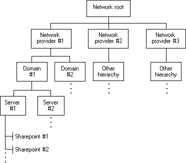

Microsoft Windows is a family of proprietary operating systems designed by Microsoft Corporation and primarily targeted to Intel architecture based computers, with an estimated 88.9 percent total usage share on Web connected computers The latest version is Windows 10. In 2011, Windows 7 overtook Windows XP as most common version in use. Microsoft Windows was first released in 1985, as an operating environment running on top of MS-DOS, which was the standard operating system shipped on most Intel architecture personal computers at the time. In 1995, Windows 95 was released which only used MS-DOS as a bootstrap. For backwards compatibility, Win9x could run real-mode MS-DOS and 16-bit Windows 3.x drivers. Windows ME, released in 2000, was the last version in the Win9x family. Later versions have all been based on the Windows NT kernel. Current client versions of Windows run on IA-32, x86-64 and 32-bit ARM microprocessors. In addition Itanium is still supported in older server version Windows Server 2008 R2. In the past, Windows NT supported additional architectures. Server editions of Windows are widely used. In recent years, Microsoft has expended significant capital in an effort to promote the use of Windows as a server operating system. However, Windows' usage on servers is not as widespread as on personal computers as Windows competes against Linux and BSD for server market share. ReactOS is a Windows-alternative operating system, which is being developed on the principles of Windows – without using any of Microsoft's code.
Currently most operating systems support a variety of networking protocols, hardware, and applications for using them. This means that computers running dissimilar operating systems can participate in a common network for sharing resources such as computing, files, printers, and scanners using either wired or wireless connections. Networks can essentially allow a computer's operating system to access the resources of a remote computer to support the same functions as it could if those resources were connected directly to the local computer. This includes everything from simple communication, to using networked file systems or even sharing another computer's graphics or sound hardware. Some network services allow the resources of a computer to be accessed transparently, such as SSH which allows networked users direct access to a computer's command line interface. Client/server networking allows a program on a computer, called a client, to connect via a network to another computer, called a server. Servers offer (or host) various services to other network computers and users. These services are usually provided through ports or numbered access points beyond the server's IP address. Each port number is usually associated with a maximum of one running program, which is responsible for handling requests to that port. A daemon, being a user program, can in turn access the local hardware resources of that computer by passing requests to the operating system kernel. Many operating systems support one or more vendor-specific or open networking protocols as well, for example, SNA on IBM systems, DECnet on systems from Digital Equipment Corporation, and Microsoft-specific protocols (SMB) on Windows. Specific protocols for specific tasks may also be supported such as NFS for file access. Protocols like ESound, or esd can be easily extended over the network to provide sound from local applications, on a remote system's sound hardware. Applications can use the WNet functions to add and cancel network connections and to retrieve information about the current configuration of the network. The following figure shows the structure of a typical network. typical network structure In the preceding figure, the hierarchy for Windows NT Server/Windows 2000 Server resources is given in detail as Network provider #1. Network resources from other providers have different hierarchical systems. An application does not need information about the hierarchy before it begins to work with a network. It can proceed from the network root (that is, the topmost container resource) and retrieve information about the network's resources as the information is required. Network resources that contain other resources are called containers. Container resources are in boxes in the preceding figure. Resources that do not contain other resources are called objects. In the preceding figure, Sharepoint #1 and Sharepoint #2 are objects. A sharepoint is an object that is accessible across the network. Examples of sharepoints include printers and shared directories.
A computer being secure depends on a number of technologies working properly. A modern operating system provides access to a number of resources, which are available to software running on the system, and to external devices like networks via the kernel. The operating system must be capable of distinguishing between requests which should be allowed to be processed, and others which should not be processed. While some systems may simply distinguish between "privileged" and "non-privileged", systems commonly have a form of requester identity, such as a user name. To establish identity there may be a process of authentication. Often a username must be quoted, and each username may have a password. Other methods of authentication, such as magnetic cards or biometric data, might be used instead. In some cases, especially connections from the network, resources may be accessed with no authentication at all (such as reading files over a network share). Also covered by the concept of requester identity is authorization; the particular services and resources accessible by the requester once logged into a system are tied to either the requester's user account or to the variously configured groups of users to which the requester belongs. In addition to the allow or disallow model of security, a system with a high level of security also offers auditing options. These would allow tracking of requests for access to resources (such as, "who has been reading this file?"). Internal security, or security from an already running program is only possible if all possibly harmful requests must be carried out through interrupts to the operating system kernel. If programs can directly access hardware and resources, they cannot be secured. External security involves a request from outside the computer, such as a login at a connected console or some kind of network connection. External requests are often passed through device drivers to the operating system's kernel, where they can be passed onto applications, or carried out directly. Security of operating systems has long been a concern because of highly sensitive data held on computers, both of a commercial and military nature. The United States Government Department of Defense (DoD) created the Trusted Computer System Evaluation Criteria (TCSEC) which is a standard that sets basic requirements for assessing the effectiveness of security. This became of vital importance to operating system makers, because the TCSEC was used to evaluate, classify and select trusted operating systems being considered for the processing, storage and retrieval of sensitive or classified information. Network services include offerings such as file sharing, print services, email, web sites, and file transfer protocols (FTP), most of which can have compromised security. At the front line of security are hardware devices known as firewalls or intrusion detection/prevention systems. At the operating system level, there are a number of software firewalls available, as well as intrusion detection/prevention systems. Most modern operating systems include a software firewall, which is enabled by default. A software firewall can be configured to allow or deny network traffic to or from a service or application running on the operating system. Therefore, one can install and be running an insecure service, such as Telnet or FTP, and not have to be threatened by a security breach because the firewall would deny all traffic trying to connect to the service on that port. An alternative strategy, and the only sandbox strategy available in systems that do not meet the Popek and Goldberg virtualization requirements, is where the operating system is not running user programs as native code, but instead either emulates a processor or provides a host for a p-code based system such as Java. Internal security is especially relevant for multi-user systems; it allows each user of the system to have private files that the other users cannot tamper with or read. Internal security is also vital if auditing is to be of any use, since a program can potentially bypass the operating system, inclusive of bypassing auditing. Microsoft Security Essentials (MSE) is an antivirus software (AV) product that provides protection against different types of malicious software, such as computer viruses, spyware, rootkits, and trojan horses. Prior to version 4.5, MSE ran on Windows XP, Windows Vista, and Windows 7, but not on Windows 8 and later versions, which have built-in AV components known as Windows Defender. MSE 4.5 and later versions do not run on Windows XP. The license agreement allows home users and small businesses to install and use the product free-of-charge. It replaces Windows Live OneCare, a discontinued commercial subscription-based AV service, and the free Windows Defender, which only protected users from spyware until Windows 8. Built upon the same scanning engine and virus definitions as other Microsoft antivirus products, it provides real-time protection, constantly monitoring activities on the computer, scanning new files as they are created or downloaded, and disabling detected threats. It lacks the OneCare personal firewall and the Forefront Endpoint Protection centralized management features. Microsoft's announcement of its own AV software on 18 November 2008, was met with mixed reactions from the AV industry. Symantec, McAfee and Kaspersky Lab—three competing independent software vendors—dismissed it as an unworthy competitor, but AVG Technologies and Avast Software appreciated its potential to expand the consumers' choice of AV software. AVG, McAfee, Sophos and Trend Micro claimed that the integration of the product into Microsoft Windows would be a violation of competition law. The product received generally positive reviews praising its user interface, low resource usage and freeware license. It secured AV-TEST certification in October 2009, having demonstrated its ability to eliminate all widely encountered malware. It lost that certification in October 2012; in June 2013, MSE achieved the lowest possible protection score, zero. However, Microsoft significantly improved this product during the couple of years preceding February 2018, when MSE achieved AV-TEST's "Top Product" award after detecting 80% of the samples used during its test. According to a March 2012 report by anti-malware specialist OPSWAT, MSE was the most popular AV product in North America and the second most popular in the world, which has resulted in the appearance of several rogue antivirus programs that try to impersonate it.
With the aid of the firmware and device drivers, the kernel provides the most basic level of control over all of the computer's hardware devices. It manages memory access for programs in the RAM, it determines which programs get access to which hardware resources, it sets up or resets the CPU's operating states for optimal operation at all times, and it organizes the data for long-term non-volatile storage with file systems on such media as disks, tapes, flash memory, etc.